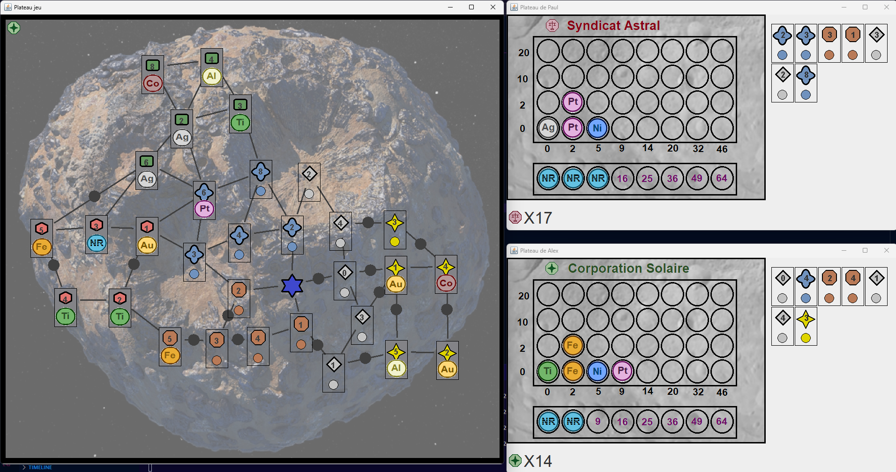
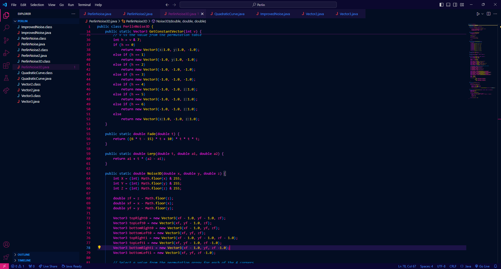
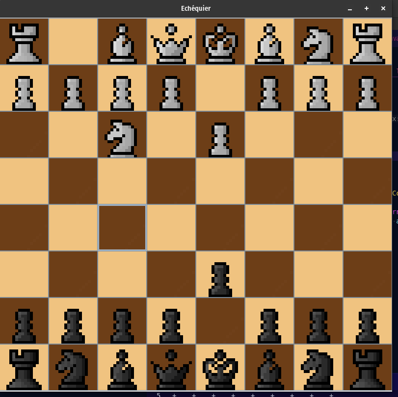
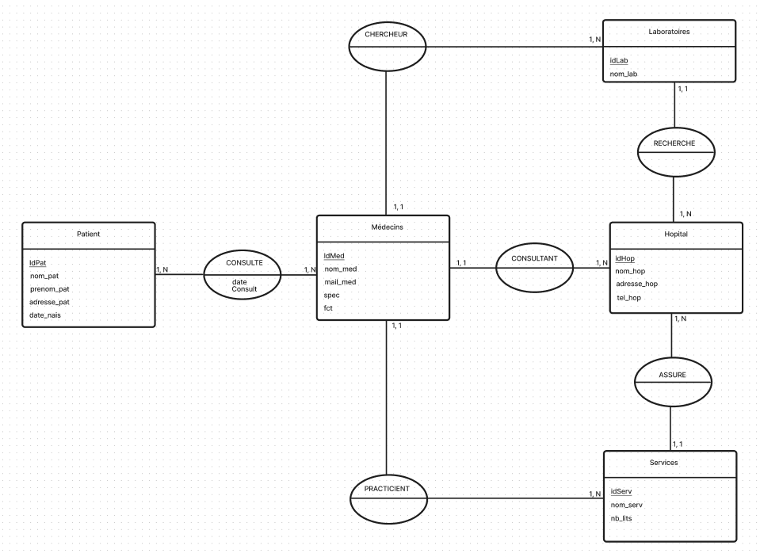
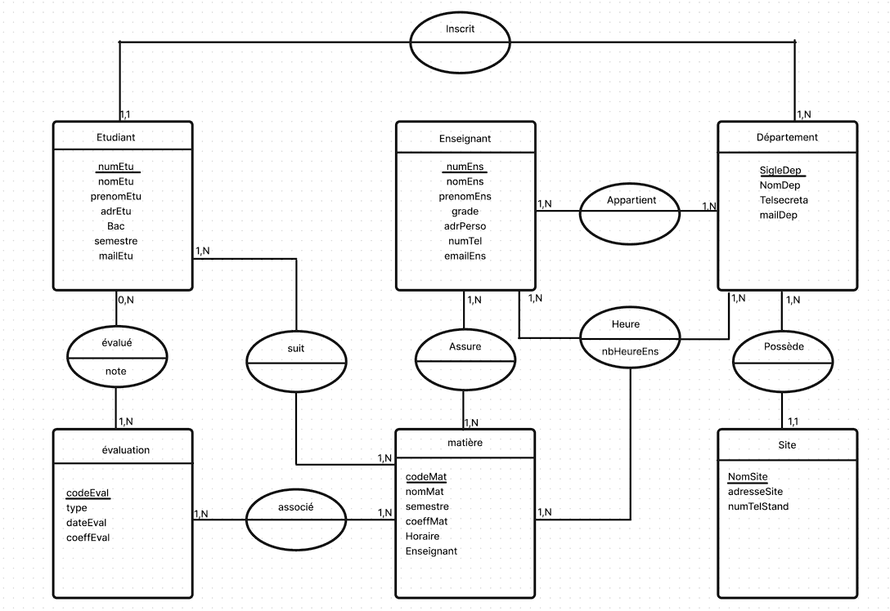
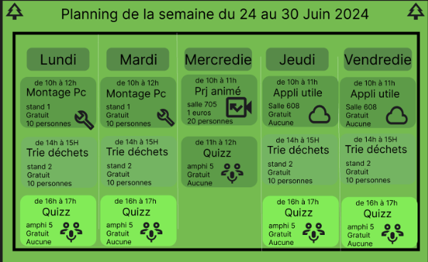

Compétence 1
Les Projets scolaires
SAE 2.01
Le projet consistait à réaliser un jeu de plateau dont le but est de capturer des Mines et récupérer des ressources sur une carte. On devait réaliser ce jeu par équipe de 7 sur une durée de 2 semaines.

Les Projets personnels
Le jeu de la vie
Ce projet est inspiré du jeu de la vie de John Horton Conway, c'est un jeu à un joueur simulant le comportement de cellules, dans ce projet j'ai tenté de reproduire ce jeu en swing en java.
Le bruit de Perlin
Ce projet consiste à retranscrire le bruit de perlin en java, le bruit de perlin est un algorithme de génération de texture procédural, cette algorithme sert notamment dans le domaine du jeu vidéo pour faire de la génération procédural.
Compétence 3
Les Projets scolaires
SAE 2.03 : Jeu d'échec
Durant cette SAE on a développé en groupe un jeu d'échec en multijoueur local, grace à Docker
Compétence 4
SAE 2.04 : Exploitation d'une base de donnée
Ce projet consistait à créer et remplir une base de donnée pour un groupe d'hopital.
SAE 1.04 : Création d'une base de données
Ce projet consistait à créer et remplir une base de donnée pour une école.
Compétence 6
SAE 2.06: Organisation d'un travail d'équipe
Ce projet consistait à créer un évènement sur le thème du numérique tout en mettant en avant la transition énergétique et le développement durable en équipe.
